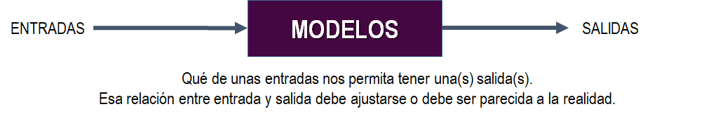

Analítica Predictiva
Juan David Ospina Arango
Profesor a cargo
Departamento de Ciencias de la Computación y de la Decisión
Universidad Nacional de Colombia
¿Qué es Analítica Predictiva?
Según IBM, es el uso de técnicas analíticas avanzadas que aprovechan los datos históricos para descubrir percepciones en tiempo real y predecir acontecimientos futuros.
Ahora bien, al definir predicción se puede decir que es una declaración precisa de lo que ocurrirá en determinadas condiciones. Las predicciones pueden tener un sentido de realidad, pero siempre se deben de realizar a partir de supuestos que se han considerado en el modelo.
La predicción se hace a partir de modelos y estos modelos son representaciones del sistema, definiendo “Sistema” como un todo organizado y complejo. Es decir, los modelos se realizan a partir de lo que estamos interesados en indagar.
Las representaciones del sistema se dan de muchas maneras, dos de ellas son: 1) las relaciones matemáticas funcionales en donde existe mucho conocimiento sobre los diferentes elementos que interactúan en el sistema; y 2) Los ajustes de estructuras matemáticas o logarítmicas que buscan no solo bases empíricas sino también aquellas ideas, intuiciones y conjeturas. Las estructuras algoritmicas que se nombran en este punto son:
-
Reglas de asociación y algoritmo Apriori
-
Regresión estadística:
-
Modelos de aprendizaje de máquina (Support Vector Machines - Maquinas de soporte vectorial, Arboles de regresión y clasificación, Los bosques aleatorios, Las Redes Neuronales Artificiales, entre otras arquitecturas).
A partir de lo anterior, la diferencia radica en que las relaciones matemáticas funcionales, a partir del conocimiento, establecen relaciones causales. Las relaciones causales se expresan de forma matemática a partir de las leyes de la fisica y termina con un modelo matemático que describe el comportamiento de un sistema.
.
Cuando se representa un sistema a través de un modelo, es muy complejo representarlo todo, por eso se hacen renuncias. Es decir, siempre que estemos modelando, escogemos capturar algunos atributos o variables de interés de un sistema, por eso estamos renunciando. Siempre que estamos modelando decidimos renunciar a una parte de la realidad. La buena práctica es documentar e identificar las renuncias. |
Información de la asignatura
La asignatura se enfocará en el tipo de predicción a partir de la segunda categoría de modelos: Estructuras matemáticas o algorítmicas que se ajustan a partir de datos.
Objetivo: Predecir.
Herramienta: Los modelos matemáticos y estadísticos establecidos a partir de Observaciones de variables.
El curso tiene un componente práctico y teórico.
Volviendo al termino de predicción y sobre todo porque este es el objetivo de la asignatura, se establece la predicción como la esperanza matemática, por eso para la asignatura no habrá mucha diferencia entre regresión y clasificación. En la regresión la respuesta es numérica y en la clasificación la respuesta es categórica, pero desde el punto de vista matemático es lo mismo.
¿Qué se espera de los modelos?

Los modelos se establecen a partir de las relaciones. En algún lugar se encuentran las verdaderas relaciones entre las entradas y las salidas. El ideal es que con el conocimiento, podamos realizar modelos que tengan consistencia entre las entradas y las salidas.

Los modelos son estructuras, las estructuras tienen diversos orígenes como:
-La matemática: Modelo de regresión líneal
-La estadística: Modelo de regresión lineal, Modelo de regresión lineal generalizada (Extiende el modelo de regresión lineal a otro tipo de problemas donde la variable respuesta no tiene que asumirse como una Distribución Normal Condicional).
-Aprendizaje de máquinas: Maquina de Soporte Vectorial (SVM), Redes Neuronales Artificiales (ANN).
En la asignatura se estudiaran los modelos de las estructuras matemáticas y el aprendizaje de máquinas.
A partir de la imagen anterior, se puede identificar los conceptos de Aprendizaje supervisado y aprendizaje no supervisado.
Aprendizaje supervisado:
Es una técnica que tiene como propósito predecir el valor correspondiente a cualquier objeto de entrada después de haber visto una serie de eventos en los datos de entrenamiento.
Ejemplos de aplicación:
- La mercadoctenia para generar comunicaciones personalizadas.
- El Spam para determinar correo basura, correo no solicitado y mensaje basura.
- La Identificación de fraudes.
- El estudio de terremotos
- Diagnósticos médicos basado en síntomas del paciente.
- La predicción de fallos de maquinaria.
Técnicas de clasificación: Regresión Logística, Maquina de Soporte Vectorial (SVM), Redes Neuronales Artificiales (ANN), Bosques Aleatorios (RF) y los Arboles de Clasificación y Regresión (ART), 1R, KNN.